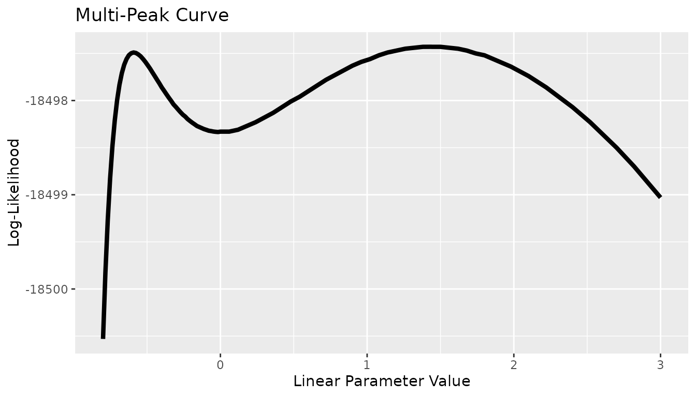

library(Colossus)
library(data.table)
library(survival)
library(dplyr)
#>
#> Attaching package: 'dplyr'
#> The following objects are masked from 'package:data.table':
#>
#> between, first, last
#> The following objects are masked from 'package:stats':
#>
#> filter, lag
#> The following objects are masked from 'package:base':
#>
#> intersect, setdiff, setequal, unionAvailable Methods
Colossus supports two methods of calculating a confidence interval for model parameters for Cox proportional hazards models. The Wald method and a likelihood-based boundary method. This vignette will be focused on the differences and what issues may arise.
Wald Method
When Colossus finishes a Cox regression, it returns both parameter estimates and standard errors. The simplest form of confidence interval is assuming a normal distribution with the parameter mean and deviation. The standard errors are calculated from the covariance matrix, which is calculated in line with the equation for the expected information matrix presented in the 32-bit Epicure manual. The covariance matrix is calculated using the inverse of the expected information matrix (). The derivation is outlined at the end of this vignette for clarity.
For every event time () there are a number of events () and a list of subjects at risk (). Every valid combination of subject and event time has a hazard ratio () and a partial derivative of the hazard ratio with respect to each parameter (). This equation is used to compute the covariance matrix and standard errors returned by Colossus by default.
This gives a symmetric parameter confidence interval which is often accurate for single-term log-linear models. However, this approximation is often inaccurate for models with linear effects, particularly if the confidence interval includes negative values. Because the Wald method approximates the likelihood confidence interval, there is no guarantee that the model is defined over the interval.
Likelihood-Based Bound
The more exact solution is to directly solve for the boundary. The basic premise is that the model can be optimized with a single parameter () fixed. Each value of has a corresponding maximum log-likelihood. The confidence interval is the range of values of such that the maximum log-likelihood is above a threshold, taken from the asymptotic distribution of the generalized likelihood ratio test. Colossus uses the Venzon-Moolgavkar algorithm to iteratively solve for the interval endpoints.
There is one main issue that can arise from this method: this uses a Newton-Raphson algorithm, which may solve for local solutions instead of the global solution. Similar to the general Colossus regressions, limitations can be placed on step size to limit these effects. However, there is no analog to selecting multiple starting locations. This is the basis for ongoing work to code in an alternative that can more directly solve for the true optimum. Methods have been implemented to optimize multiple points and apply a bisection method instead of a derivative-based method.
This method directly solves the confidence interval, which for linear cases may be non-symmetric or even not have upper or lower bounds. Linear models may be defined only above a parameter threshold. If the optimum value at that parameter threshold is above the threshold value, then the interval would not have a lower bound.
Example and Comparison
For the sake of comparison, we will consider an analysis of the capacitor data available in the survival package. Consider the two regressions, one fully exponential and one with a linear effect. Both regressions converge with nearly identical scores.
data(reliability, package = "survival")
capacitor %>% setDT()
df <- copy(capacitor)
df$voltage <- (df$voltage - 200) / 150
df$temperature <- (df$temperature - 170) / 10
df$time <- (df$time - 216) / (1105 - 216)
control <- list("Ncores" = 1, "maxiter" = 100, "verbose" = 2)
a_n <- c(0.01, 0.01)
e1 <- CoxRun(Cox(time, status) ~ loglinear(temperature, voltage, 0), df, a_n = a_n, control = control)
print(e1, 5)
#> |-------------------------------------------------------------------|
#> Final Results
#> Covariate Constant Central Estimate Standard Error 2-tail p-value
#> <char> <lgcl> <char> <char> <char>
#> 1: temperature FALSE 0.75995 0.39644 0.0552490
#> 2: voltage FALSE 1.98839 0.60631 0.0010399
#>
#> Cox Model Used
#> -2*Log-Likelihood: 210.77792, AIC: 214.77792
#> Iterations run: 8
#> maximum step size: 5.90475e-05, maximum first derivative: 5.22560e-05
#> Analysis converged
#> Run finished in 0.02268 seconds
#> |-------------------------------------------------------------------|
e2 <- CoxRun(Cox(time, status) ~ loglinear(temperature, 0) + plinear(voltage, 0), df, a_n = a_n, control = control)
print(e2, 5)
#> |-------------------------------------------------------------------|
#> Final Results
#> Covariate Subterm Term Number Constant Central Estimate Standard Error
#> <char> <char> <int> <lgcl> <char> <char>
#> 1: temperature loglin 0 FALSE 0.95035 0.4313
#> 2: voltage plin 0 FALSE 8.81720 6.1906
#> 2-tail p-value
#> <char>
#> 1: 0.027563
#> 2: 0.154362
#>
#> Cox Model Used
#> -2*Log-Likelihood: 208.49028, AIC: 212.49028
#> Iterations run: 13
#> maximum step size: 2.57874e-03, maximum first derivative: 3.62470e-05
#> Analysis converged
#> Run finished in 0.01273 seconds
#> |-------------------------------------------------------------------|Next, suppose we were interested in the confidence intervals. Suppose we want 95% confidence intervals for both the Wald and likelihood-based boundaries and for both parameters in each model. Let us start with the fully exponential model. The Wald boundary is estimated using the central estimates and standard deviations. The Likelihood boundary is solved using the “log_bound” option under the model control list. The parameter number needs to be provided (indexed starting at zero) and an alpha level needs to be provided. Overall, the likelihood boundaries were all solved with scores within a narrow margin of the threshold. However, the boundaries are not the same. The boundaries for temperature are (-0.017, 1.537) and (-0.01, 1.560), and the boundaries for voltage are (0.800, 3.177) and (0.841, 3.242). The two boundaries are off on a scale of less than 0.1.
names <- c("temperature", "voltage")
tform <- c("loglin", "loglin")
ci_1 <- c(
e1$beta_0[1] - 1.96 * e1$Standard_Deviation[1],
e1$beta_0[1] + 1.96 * e1$Standard_Deviation[1]
)
ci_2 <- c(
e1$beta_0[2] - 1.96 * e1$Standard_Deviation[2],
e1$beta_0[2] + 1.96 * e1$Standard_Deviation[2]
)
curve_control <- list(
"maxstep" = 100,
"alpha" = 0.05,
"para_number" = 1, "manual" = TRUE
)
e <- LikelihoodBound(e1, df, curve_control, control = control)
#> Warning in RunCoxRegression_Omnibus(df, time1 = time1, time2 = time2, event0 =
#> event0, : Warning: Basic loglinear model used, but multiplicative model not
#> used. Modelform corrected
print("|------------------- Wald Estimate -------------------|")
#> [1] "|------------------- Wald Estimate -------------------|"
print(ci_1)
#> [1] -0.01708172 1.53697802
print(e, 5)
#> |-------------------------------------------------------------------|
#> Likelihood Boundary Results
#> Solving for the boundary of element: 1
#> Applied to column: 'temperature'
#> Subterm: loglin
#> Term number: 0
#> Lower limit converged to at -0.0098967 at a score of -107.30968 with of goal of -107.30969
#> Central estimate was 0.75995
#> Upper limit converged to at 1.5599 at a score of -107.30968 with of goal of -107.30969
#> Run finished in 0.0081 seconds
#> |-------------------------------------------------------------------|
curve_control <- list(
"maxstep" = 100,
"alpha" = 0.05,
"para_number" = 2, "manual" = TRUE
)
e <- LikelihoodBound(e1, df, curve_control, control = control)
#> Warning in RunCoxRegression_Omnibus(df, time1 = time1, time2 = time2, event0 =
#> event0, : Warning: Basic loglinear model used, but multiplicative model not
#> used. Modelform corrected
print("|------------------- Likelihood Bound Estimate -------------------|")
#> [1] "|------------------- Likelihood Bound Estimate -------------------|"
print(ci_2)
#> [1] 0.8000252 3.1767554
print(e, 5)
#> |-------------------------------------------------------------------|
#> Likelihood Boundary Results
#> Solving for the boundary of element: 2
#> Applied to column: 'voltage'
#> Subterm: loglin
#> Term number: 0
#> Lower limit converged to at 0.84124 at a score of -107.30968 with of goal of -107.30969
#> Central estimate was 1.9884
#> Upper limit converged to at 3.242 at a score of -107.30968 with of goal of -107.30969
#> Run finished in 0.00731 seconds
#> |-------------------------------------------------------------------|Next, we analyze a model with a linear effect. We would expect the predictions to be further off. The boundaries for temperature are (-0.523, 2.800) and (-0.010, 3.758), and the boundaries for voltage are (0.800, 3.177) and (0.841, 3.242). The estimates for the voltage boundary are the same, but the estimates for the temperature boundary are much further off.
ci_1 <- c(
e2$beta_0[1] - 1.96 * e2$Standard_Deviation[1],
e2$beta_0[1] + 1.96 * e2$Standard_Deviation[1]
)
ci_2 <- c(
e2$beta_0[2] - 1.96 * e2$Standard_Deviation[2],
e2$beta_0[2] + 1.96 * e2$Standard_Deviation[2]
)
curve_control <- list(
"maxstep" = 100,
"alpha" = 0.05,
"para_number" = 1, "manual" = TRUE
)
e <- LikelihoodBound(e2, df, curve_control, control = control)
#> Warning in RunCoxRegression_Omnibus(df, time1 = time1, time2 = time2, event0 =
#> event0, : Warning: Linear ERR model used, but multiplicative model not used.
#> Modelform corrected
print("|------------------- Wald Estimate -------------------|")
#> [1] "|------------------- Wald Estimate -------------------|"
print(ci_1)
#> [1] 0.1049977 1.7956959
print(e, 5)
#> |-------------------------------------------------------------------|
#> Likelihood Boundary Results
#> Solving for the boundary of element: 1
#> Applied to column: 'temperature'
#> Subterm: loglin
#> Term number: 0
#> Lower limit converged to at 0.12897 at a score of -106.16586 with of goal of -106.16587
#> Central estimate was 0.95035
#> Upper limit converged to at 1.8401 at a score of -106.16587 with of goal of -106.16587
#> Run finished in 0.00858 seconds
#> |-------------------------------------------------------------------|
a_n <- c(1.138152, 1.988403)
curve_control <- list(
"maxstep" = 100,
"alpha" = 0.05,
"para_number" = 2, "manual" = TRUE
)
e <- LikelihoodBound(e2, df, curve_control, control = control)
#> Warning in RunCoxRegression_Omnibus(df, time1 = time1, time2 = time2, event0 =
#> event0, : Warning: Linear ERR model used, but multiplicative model not used.
#> Modelform corrected
print("|------------------- Wald Estimate -------------------|")
#> [1] "|------------------- Wald Estimate -------------------|"
print(ci_2)
#> [1] -3.316339 20.950734
print(e, 5)
#> |-------------------------------------------------------------------|
#> Likelihood Boundary Results
#> Solving for the boundary of element: 2
#> Applied to column: 'voltage'
#> Subterm: plin
#> Term number: 0
#> Lower limit converged to at 1.9709 at a score of -106.16585 with of goal of -106.16587
#> Central estimate was 8.8172
#> Upper limit converged to at 34.472 at a score of -106.16587 with of goal of -106.16587
#> Run finished in 0.00901 seconds
#> |-------------------------------------------------------------------|Illustration of Issues with Likelihood-Boundary Algorithm
One important thing to keep in mind is that the likelihood-based boundary algorithm is not perfect, and at times it may be important to manually solve for the likelihood curve. The following example outlines how this is done and what details about the curve can cause issues for the boundary algorithm. The following uses a dataset used by Colossus for unit testing. The linear parameter was selected for analysis. For each point on a grid, the linear parameter was fixed and the model was optimized.
fname <- "base_example.csv"
df <- fread(fname)
keep_constant <- c(0, 0, 1)
a_n <- c(-1.493177, 5.020007, 1.438377)
model <- Cox(entry, exit, event) ~ loglinear(dose0, dose1, 0) + linear(dose0, 1)
#
control <- list(
"ncores" = 2, "lr" = 0.75, "maxiters" = c(100, 100), "halfmax" = 5,
"epsilon" = 1e-6, "deriv_epsilon" = 1e-6, "step_max" = 1.0,
"thres_step_max" = 100.0, "verbose" = 2,
"ties" = "breslow"
)
v0 <- sort(c((0:50 / 50 - 1.0) * 0.8, 1:50 / 50 * 3, 1.438377, -0.5909))
for (v in v0) {
a_n <- c(-1.493177, 5.020007, v)
e <- CoxRun(model, df, a_n = a_n, control = control)
ll <- e$LogLik
beta <- e$beta_0
print(c(ll, beta[3]))
}What is important to note is that there are two local optimums within a small range (-0.6 and the global solution at 1.4). The algorithms used for solving the likelihood boundary, similar to the standard regression optimizing algorithm, can be trapped by local optimums. This means that if the algorithm at any point has to cross over the local optimum, it can be trapped. The two optimums have scores close enough that a 95% confidence interval has a lower boundary below -0.5, but a 50% confidence interval has a lower bound between -0.5 and 1.4. This meant that the algorithm converged to the 50% confidence interval boundary, but failed to converge for the lower boundary of the 95% confidence interval boundary. Development is ongoing to automate the process for solving the complete likelihood curve.
x <- c(-0.8, -0.784, -0.768, -0.752, -0.736, -0.72, -0.704, -0.688, -0.672, -0.656, -0.64, -0.624, -0.608, -0.592, -0.5909, -0.576, -0.56, -0.544, -0.528, -0.512, -0.496, -0.48, -0.464, -0.448, -0.432, -0.416, -0.4, -0.384, -0.368, -0.352, -0.336, -0.32, -0.304, -0.288, -0.272, -0.256, -0.24, -0.224, -0.208, -0.192, -0.176, -0.16, -0.144, -0.128, -0.112, -0.096, -0.08, -0.064, -0.048, -0.032, -0.016, 0.0, 0.06, 0.12, 0.18, 0.24, 0.3, 0.36, 0.42, 0.48, 0.54, 0.6, 0.66, 0.72, 0.78, 0.84, 0.9, 0.96, 1.02, 1.08, 1.14, 1.2, 1.26, 1.32, 1.38, 1.438377, 1.44, 1.5, 1.56, 1.62, 1.68, 1.74, 1.8, 1.86, 1.92, 1.98, 2.04, 2.1, 2.16, 2.22, 2.28, 2.34, 2.4, 2.46, 2.52, 2.58, 2.64, 2.7, 2.76, 2.82, 2.88, 2.94, 3.0)
y <- c(-18500.53, -18499.829, -18499.273, -18498.831, -18498.482, -18498.21, -18497.995, -18497.832, -18497.71, -18497.621, -18497.56, -18497.519, -18497.498, -18497.49, -18497.4904, -18497.495, -18497.51, -18497.53, -18497.558, -18497.589, -18497.624, -18497.66, -18497.7, -18497.739, -18497.779, -18497.818, -18497.86, -18497.896, -18497.933, -18497.969, -18498.003, -18498.04, -18498.067, -18498.096, -18498.124, -18498.15, -18498.17, -18498.196, -18498.216, -18498.235, -18498.252, -18498.27, -18498.281, -18498.292, -18498.303, -18498.311, -18498.32, -18498.324, -18498.329, -18498.332, -18498.334, -18498.33, -18498.33, -18498.31, -18498.27, -18498.23, -18498.18, -18498.13, -18498.07, -18498.01, -18497.96, -18497.9, -18497.84, -18497.78, -18497.73, -18497.68, -18497.63, -18497.59, -18497.56, -18497.52, -18497.49, -18497.47, -18497.45, -18497.44, -18497.43, -18497.429487, -18497.43, -18497.43, -18497.44, -18497.45, -18497.47, -18497.5, -18497.52, -18497.56, -18497.6, -18497.64, -18497.69, -18497.74, -18497.8, -18497.86, -18497.93, -18498.0, -18498.07, -18498.15, -18498.23, -18498.32, -18498.41, -18498.5, -18498.6, -18498.7, -18498.81, -18498.92, -18499.03)
df <- data.table("x" = x, "y" = y)
g <- ggplot2::ggplot(df, ggplot2::aes(x = .data$x, y = .data$y)) +
ggplot2::geom_line(color = "black", alpha = 1, "linewidth" = 1.5) +
ggplot2::labs(x = "Linear Parameter Value", y = "Log-Likelihood") +
ggplot2::ggtitle("Multi-Peak Curve")
g
Likelihood Boundary Algorithm Alternative
As an alternative to the likelihood algorithm, a direct curve-solving method is implemented. The CoxCurveSolver function solves the boundary values by iteratively optimizing points and using the bisection method. Each step is approximately as fast as running a single regression. The same model_control options are used to select which parameter is selected and what alpha to use, but with an option “step_size” which is the default search window width used. The bisection method functions by (1) selecting an interval, (2) optimizing at the upper, lower, and midpoint of the interval, and (3) checking if the goal likelihood is crossed. If at least one of the interval points is on each side of the goal then the interval is narrowed, and if not then the interval is shifted away from the optimum.
fname <- "base_example.csv"
df <- fread(fname)
model <- Cox(entry, exit, event) ~ loglinear(dose0, dose1, 0) + linear(dose0, 1)
keep_constant <- c(0, 0, 0)
a_n <- c(-1.493177, 5.020007, 1.438377)
#
control <- list(
"ncores" = 2, "lr" = 0.75, "maxiter" = 100, "halfmax" = 5,
"verbose" = 2
)
coxres <- CoxRun(model, df, a_n = a_n, control = control)
curve_control <- list("maxstep" = 20, "alpha" = 0.005, "para_number" = 3, "step_size" = 0.5, "bisect" = TRUE)
e <- LikelihoodBound(coxres, df, curve_control, control = control)There are three functions available for calculating likelihood-based boundaries. The first method is the standard Venzon-Moolgavkar algorithm. This method attempts to both optimize the model and guide the desired parameter to the boundary value. This method is the fastest, but most susceptible to local extrema. Using this algorithm depends on the initial step not being close to a local extrema, so the initial step can be scaled up or down. The second method is a modification of the Venzon-Moolgavkar algorithm. In the second method, the initial step is split into multiple guesses, and each guess is optimized independently. The Venzon-Moolgavkar algorithm is then continued at the closest guess that did not exceed the target likelihood. In theory, this method makes it more likely for the algorithm to start at an appropriate point, so it is slower but slightly less susceptible to local extrema. However the final portion of the algorithm is still based on derivatives, so it is still susceptible to local extrema. The third method is an iterative bisection method. In this algorithm, the desired parameter is fixed, and the model is optimized at the endpoints of an interval until an interval is located which contains the goal likelihood. Then the interval is split in half until the interval width is within a user-set limit. This method takes advantage of the fact that the likelihood curve is continuous and we know that the optimum point must be above the goal. The algorithm is split into two steps: optimizing the model at fixed points and determining if the interval contains the goal. The second step does not depend on the likelihood derivatives, so it is not prone to getting stuck in local extrema. However, the interval width must be small enough not to step over the solution. Given a small enough interval width, every optimization is likely to converge and the solution is unlikely to be skipped. This method requires the model to be optimized repeatedly, so it is expected to take the longest. However, the bisection method is the least likely to have issues converging.
Expected Information Matrix Derivation
The expected information matrix is calculated using two equations, the second derivative of log-likelihood and the probability of a subject having an event given the rows at risk and the number of events. To begin, the second derivative of log-likelihood is expressed as follows:
Next, we assume we have independent failure and censoring, and events in a risk group . Assuming each row at risk has an approximately equal background rate, the probability of any given subject having an event is as follows:
Finally, we want to evaluate the expected information matrix given the following:
We can start by splitting the equation into the expected contribution at each event time () and then simplifying the expected value of constant terms. Note that we switch from the event indicator of each row () to the number of events in each risk group ():
Finally, we substitute, cancel, and use the function definitions above and we have the expected information matrix derived from the observed information matrix formula.